Home
Phô
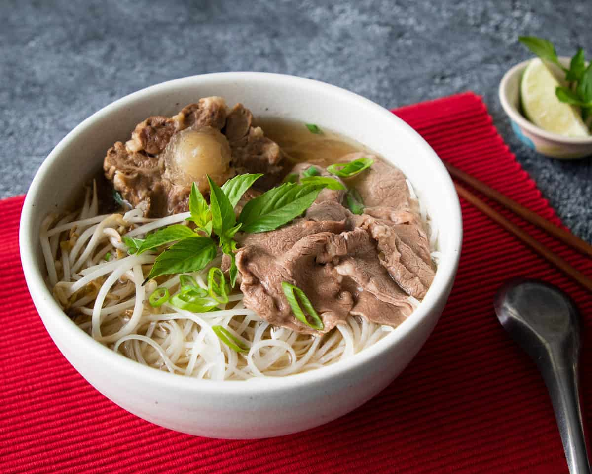
Description
Many people get hooked on Vietnamese food after trying pho — a heady bowl of spiced broth with flat, tangly rice noodles, a featured protein topping of your choice, green onions, and herbs.
Each pho cook has their own formula for seasoning and crafting the broth and toppings.
Diners get to personalize their pho noodle soup at the table by adding various kinds of condiments, herbs, and sometimes bean sprouts too. It's a quintessential have-it-your-way dish. Beef pho (pho bo) is most common but there are many kinds of pho.
Ingredients
- 5 pounds beef soup bones
- 1 tablespoon salt, divided
- 2 gallons water
- 2 medium onions, quartered
- 1 (4 inch) piece fresh ginger root
- 2 pounds beef oxtail
- 1 white (daikon) radish, sliced
- 2 ounces whole star anise pods
- ½ (3 inch) cinnamon stick
- 1 teaspoon black peppercorns
- 2 whole cloves
- 1 tablespoon white sugar
- 1 tablespoon fish sauce
- salt to taste
Steps
- Gather all ingredients.
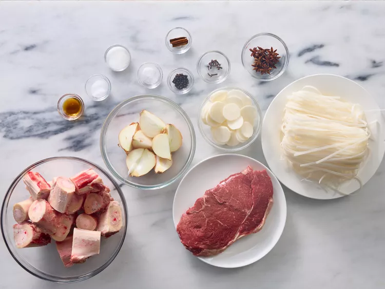
- Place beef bones in a 9-quart (or larger) pot; season with 1 teaspoon salt. Pour water into the pot and bring to a boil. Reduce heat and simmer broth for about 2 hours.
- Meanwhile, set an oven rack about 6 inches from the heat source and preheat the oven's broiler. Line a 10x15-inch roasting pan with aluminum foil.
- Place onions and unpeeled ginger onto the prepared roasting pan and cook under the preheated broiler, stirring occasionally, until vegetables are charred, 10 to 15 minutes.
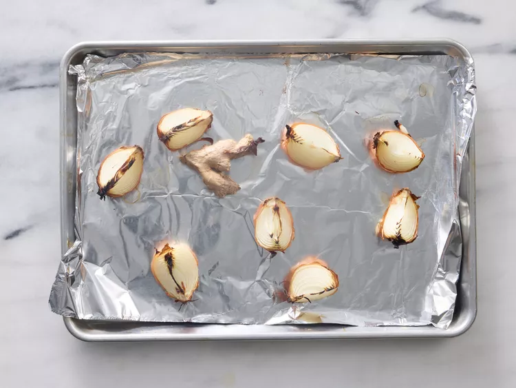
- Cool slightly. Chop onions, then peel and slice ginger; set aside separately.
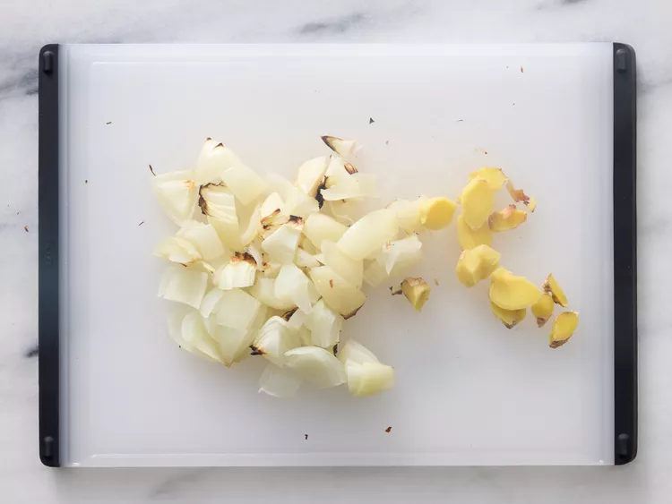
- Skim fat from surface of simmering broth. Add oxtail, radish, and charred onions to broth. Tie charred ginger, anise, cinnamon stick, peppercorns, and cloves in cheesecloth to make a bouquet garni; add to broth. Stir in sugar, fish sauce, and remaining 2 teaspoons salt. Simmer over medium-low heat for at least 4 hours (the longer, the better). Season with salt.
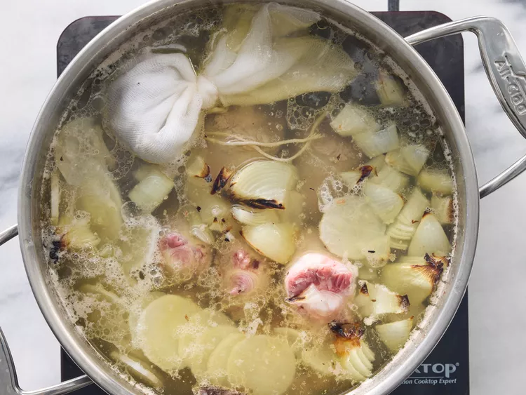
- Strain broth. Discard bones and bouquet garni. Reserve meat from bones for another use. Chill broth in the refrigerator, 8 hours to overnight.
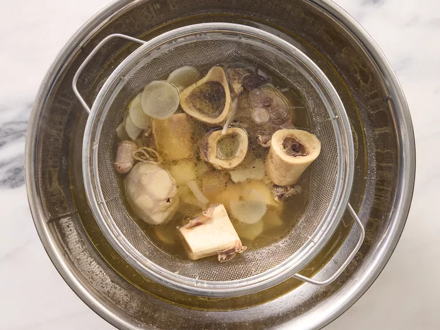
- Skim and discard fat from the top of chilled broth. Pour broth into a pot; bring to a boil. Reduce heat and keep hot until ready to serve.
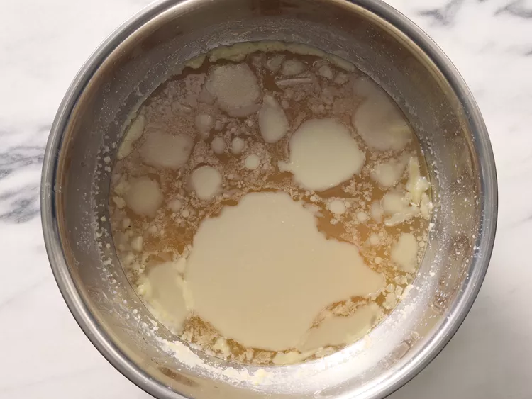
- Bring a pot of water to a boil. Turn off heat. Stir in rice noodles and let sit until noodles are tender yet chewy, 6 to 10 minutes.
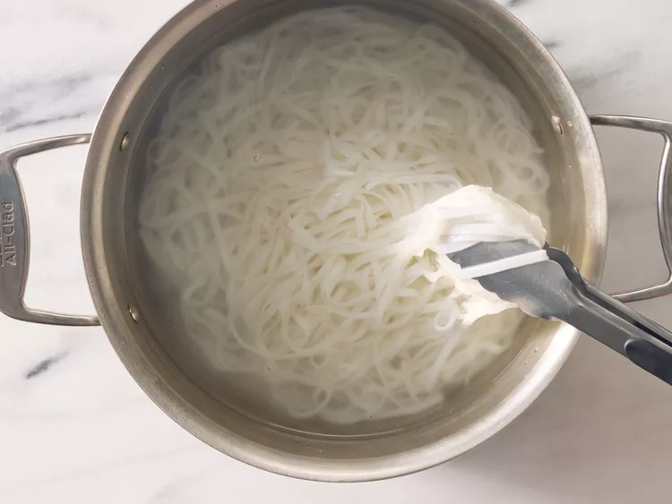
- Meanwhile, cut frozen sirloin into paper-thin slices.
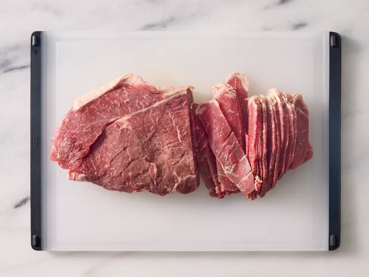
- Drain and divide noodles among bowls, about 1 1/2 cups per serving. Top each with a few sirloin slices. Ladle hot broth over sirloin and noodles.
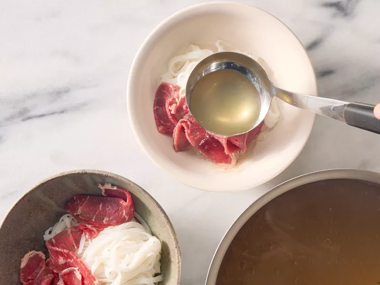
- Serve and enjoy!
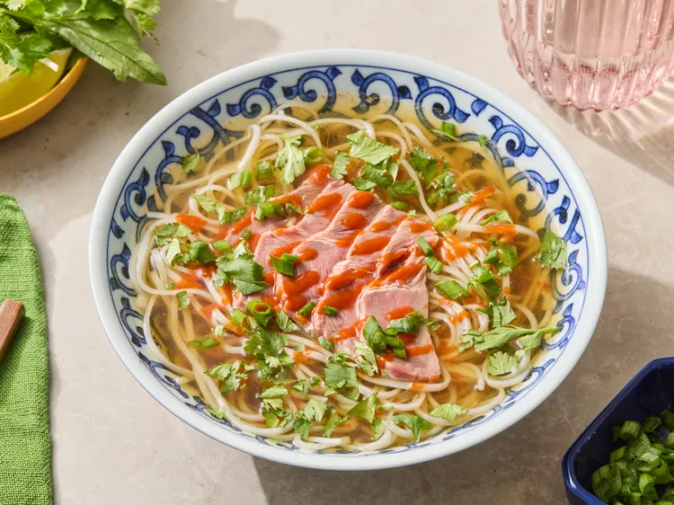